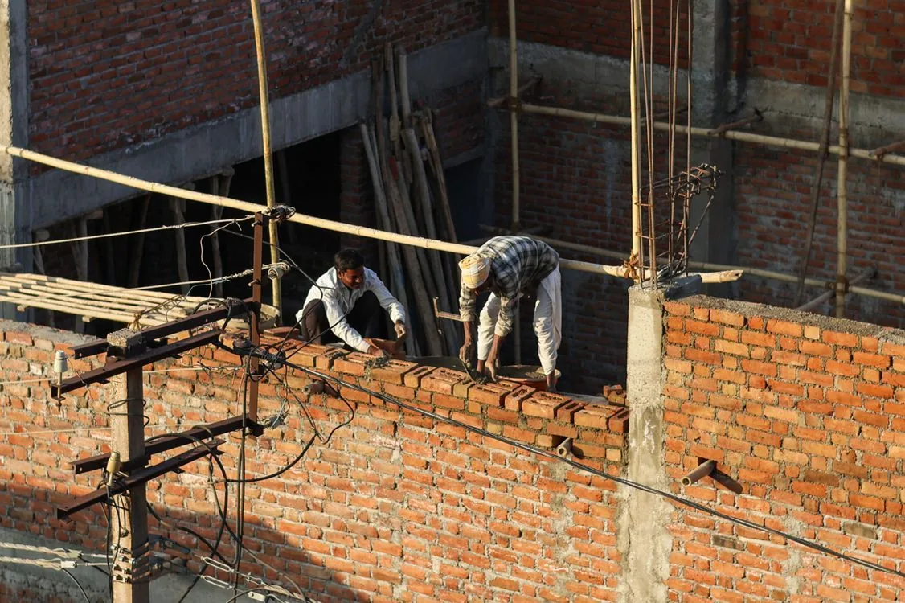
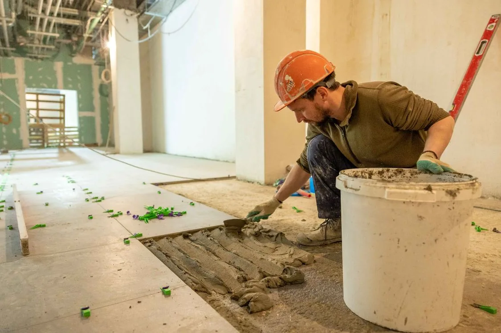
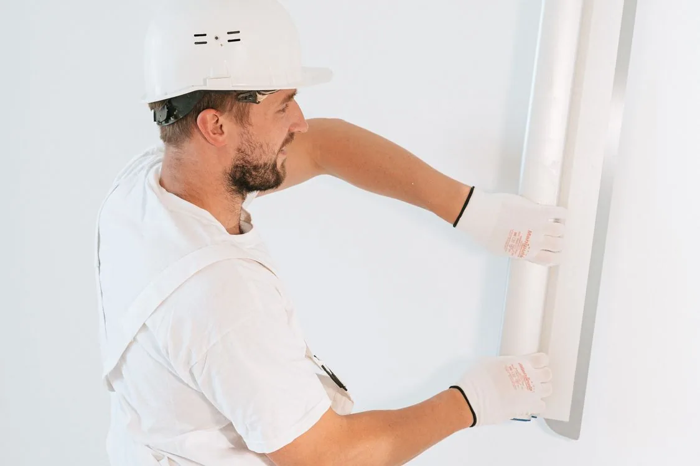

Construção e alvenaria
Execução de alvenaria convencional e bloco estrutural, marcação, reboco e acompanhamento das etapas da obra.
Mestre de obras em Brasília e Águas Lindas
Planejamento, liderança da equipe e execução cuidadosa para construir ou reformar com mais clareza, segurança e qualidade.
Especialidades
Referências visuais dos tipos de serviço atendidos. As fotografias abaixo são ilustrativas e não representam obras executadas pelo Eduardo.



Compromisso com cada etapa
Uma obra exige mais do que mão de obra. Exige leitura de projeto, coordenação da equipe e atenção aos detalhes que evitam retrabalho.
Eduardo acompanha a execução de perto, alinha as etapas com o cliente e mantém o foco no prazo e na qualidade do serviço.
Serviços
Da alvenaria ao revestimento, cada serviço é executado com critério técnico e comunicação direta.
Execução de alvenaria convencional e bloco estrutural, marcação, reboco e acompanhamento das etapas da obra.
Renovação de ambientes residenciais e comerciais com foco em bom acabamento, organização e menor retrabalho.
Assentamento cuidadoso de pisos e revestimentos, respeitando alinhamento, paginação e detalhes de acabamento.
Paredes e divisórias em drywall, além de experiência com sistemas de construção como EPS, a chamada casa de isopor.
Como funciona
Você entende o próximo passo antes de assumir qualquer compromisso.
Explicar meu projetoConte pelo WhatsApp o que precisa, onde fica a obra e qual é a sua expectativa.
Os detalhes, medidas, materiais e condições do local são avaliados antes da proposta.
Com o escopo alinhado, a equipe é organizada e a obra segue com acompanhamento de perto.
Experiência profissional
Formação como mestre de obras pelo Instituto da Construção e trajetória em obras residenciais, estruturais e prediais.
A Santos • Construção de apartamentos do programa Minha Casa, Minha Vida e administração de equipes em campo.
Odebrecht • Alvenaria de bloco estrutural, marcação de alvenaria e reboco.
Brookfield • Assentamento de cerâmicas e porcelanato.
Faculdade JK • Experiência prática com manutenção de edificações.
Atendimento local
Eduardo atende principalmente no Plano Piloto, Ceilândia, Taguatinga, Samambaia, Águas Claras, Guará, Vicente Pires, Gama, Sobradinho e outras regiões do Distrito Federal, além de Águas Lindas de Goiás. Demais municípios da RIDE-DF são atendidos mediante consulta de distância e disponibilidade.
Água Quente, Águas Claras, Arapoanga, Arniqueira, Brazlândia, Candangolândia, Ceilândia, Cruzeiro, Fercal, Gama, Guará, Itapoã, Jardim Botânico, Lago Norte, Lago Sul, Núcleo Bandeirante, Paranoá, Park Way, Planaltina, Plano Piloto, Recanto das Emas, Riacho Fundo, Riacho Fundo II, Samambaia, Santa Maria, São Sebastião, SCIA/Estrutural, SIA, Sobradinho, Sobradinho II, Sol Nascente/Pôr do Sol, Sudoeste/Octogonal, Taguatinga, Varjão e Vicente Pires.
Abadiânia, Água Fria de Goiás, Águas Lindas de Goiás, Alexânia, Alto Paraíso de Goiás, Alvorada do Norte, Barro Alto, Cabeceiras, Cavalcante, Cidade Ocidental, Cocalzinho de Goiás, Corumbá de Goiás, Cristalina, Flores de Goiás, Formosa, Goianésia, Luziânia, Mimoso de Goiás, Niquelândia, Novo Gama, Padre Bernardo, Pirenópolis, Planaltina, Santo Antônio do Descoberto, São João d'Aliança, Simolândia, Valparaíso de Goiás, Vila Boa e Vila Propício.
Arinos, Buritis, Cabeceira Grande e Unaí.
Dúvidas frequentes
Construções, reformas, alvenaria estrutural, acabamentos, drywall, porcelanato e serviços relacionados. O escopo é confirmado após entender o projeto.
Plano Piloto, Ceilândia, Taguatinga, Samambaia, Águas Claras, Guará, Vicente Pires, Gama e Sobradinho estão entre as regiões mais recorrentes, além de Águas Lindas de Goiás. As demais regiões do DF e localidades da RIDE-DF são avaliadas mediante consulta.
Envie uma mensagem com o tipo de serviço, local da obra e, se possível, fotos ou projeto. Assim a avaliação inicial fica mais objetiva.
Sim. Leitura e interpretação de projetos fazem parte da formação e da experiência profissional do Eduardo.
Solicite uma avaliação
Preencha os dados e abra uma conversa com a mensagem pronta no WhatsApp.